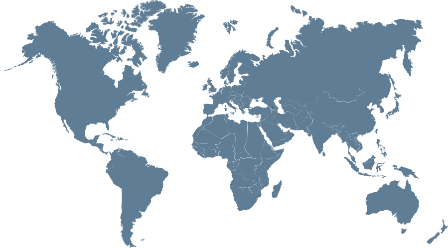

Research Output Scholar ORCID ResearchGate Scopus
Published Papers (selected)
Articles: —
•
Theses: —
2025
- Golder, M. R., & Antoine, D. (2025). Physical drivers of long-term chlorophyll-a variability in the Southern Ocean. Elementa, 13(1), 00077. https://doi.org/10.1525/elementa.2024.00077
- Islam, S. S., Nowshin, R., Bir, J., Sarmin, S. S., Islam, M. R., Sultana, A., Ferdose, J., Sultana, A., Zohora, F. T., Khanom, M., Golder, M. R., Zobayer, M. F. A., Das, K. K., Khatun, M. A., Sadia, S., & Huq, K. A. (2025). Impact of commercial probiotics on growth, prophenoloxidase, superoxide dismutase, and digestive enzyme activity in Macrobrachium rosenbergii cultured at different stocking densities. Aquaculture Research, 1, 4397755. https://doi.org/10.1155/are/4397755
2023
- Hosen, M., Alam, M., Chakraborty, T., & Golder, M. R. (2023). Monitoring spatiotemporal and seasonal variation of agricultural drought in Bangladesh using MODIS-derived vegetation health index. Journal of Earth System Science, 132, 188. https://doi.org/10.1007/s12040-023-02200-3
- Shammi, A. T., Hassan, N., Golder, M. R., Molla, H., & Islam, S. S. (2023). Health status assessment of people adjacent to temporary waste disposal sites in Khulna city, Bangladesh. Heliyon, 9(9). https://doi.org/10.1016/j.heliyon.2023.e19810
- Fardoshi, T., Golder, M. R., Rouf, M. A., & Masud-Ul-Alam, M. (2023). Seasonal and spatial variability of chlorophyll-a in response to ENSO and ocean current in the maritime boundary of Bangladesh. Journal of Marine Sciences, 3(12). https://doi.org/10.1155/2023/2843608
- Munia, T. T., Islam, H. M. R., Golder, M. R., Hossen, M. B., Banu, G. R., & Islam, S. S. (2023). Response of Macrobrachium rosenbergii juveniles against a virulent isolate of Vibrio sp. from a diseased Penaeus monodon. Bangladesh Journal of Fisheries, 35(1), 1–12. https://doi.org/10.52168/bjf.2023.35.01
2022
- Rouf, M. A., Islam, M. J., Roknuzzaman, M., Siddiqui, M. N., & Golder, M. R. (2022). Stratification pattern of dissolved oxygen and associated water parameters in the Pasur–Rupsha estuary of Bangladesh. Heliyon, e10935. https://doi.org/10.1016/j.heliyon.2022.e10935
- Bir, J., Golder, M. R., & Islam, S. S. (2022). Review on invasive alien species (IAS): Challenge and consequence to the aquatic ecosystem services. Marine Science and Technology Bulletin, 11(3), 288–298. https://doi.org/10.33714/masteb.1091625
- Golder, M. R., Shammi, A. T., & Rouf, M. A. (2022). Enhanced awareness to coastal ecology: Protecting endangered species of the Bay of Bengal. Oceanography & Fisheries Open Access Journal, 15(1), 555904. https://doi.org/10.19080/OFOAJ.2022.15.555904
- Masud-Ul-Alam, M., Khan, M. A. I., Barrett, B. S., River-Calle, S., Golder, M. R., & Rouf, M. A. (2022). Spatial variation of the winter thermal inversion in the northern Bay of Bengal. Regional Studies in Marine Science, 53(6), 102417. https://doi.org/10.1016/j.rsma.2022.102417
- Shuva, M. S. H., Golder, M. R., Rouf, M. A., Uddin, M. M., & Bir, J. (2022). Daytime and nighttime sea surface temperature (SST) along with diurnal variability (D-SST) in the northern Bay of Bengal: A remote sensing approach. Thalassas: An International Journal of Marine Science. https://doi.org/10.1007/s41208-022-00406-8
- Islam, S. S., Golder, M. R., Bir, J., Mistry, S. K., Siddique, M. N. A., Ali, M. R., Sabbir, W., Azad, M. A. K., & Huq, K. A. (2022). Growth comparison of mono and mixed-sex giant freshwater prawn (Macrobrachium rosenbergii, De Man) and stocking optimization of male monosex farming. Khulna University Studies, 33(2), 275–282. https://doi.org/10.53808/KUS.2022.19.01.2114-ls
2021
- Golder, M. R., Zilany, M. A. K., Bir, J., Huq, K. A., Kabir, K. A., Mamun-Ur-Rashid, M., & Islam, S. S. (2021). Effect of different experimental diets and salinity on growth performance of Penaeus monodon. Bangladesh Journal of Fisheries, 33(2), 275–282. https://doi.org/10.52168/bjf.2021.33.30
- Islam, M. R., Ali, M. Z., Hasanuzzaman, A. F. M., Golder, M. R. (2021). Effect of skip-feeding and re-feeding regimes on compensatory growth, body composition, feed utilization, feeding cost, and survival of monosex tilapia (Oreochromis niloticus) in pond aquaculture system. Bangladesh Journal of Fisheries, 33(2), 225–233. https://doi.org/10.52168/bjf.2021.33.25
- Bir, J., Golder, M. R., Biswas, P., Tasrin, S., & Chowdhury, S. Z. (2021). Plastic pollution in an estuary: A preliminary study on the Rupsha River in southwestern Bangladesh. Bangladesh Journal of Fisheries, 33(2), 295–304. https://doi.org/10.52168/bjf.2021.33.32
- Rouf, M. A., Golder, M. R., & Afroje, Z. (2021). Satellite-based observation of particulate organic carbon in the northern Bay of Bengal. Environmental Advances. https://doi.org/10.1016/j.envadv.2021.100124
- Rouf, M. A., Golder, M. R., Kana, N. A., Debnath, S., Rahman, M. M., Mathew, R. T., & Alrashada, Y. N. (2021). Production, trading and potential utilization of fish scale in Khulna, Bangladesh. Advances in Animal and Veterinary Sciences, 9(12), 2194–2200. https://doi.org/10.17582/journal.aavs/2021/9.12.2194.2200
- Golder, M. R., Shuva, M. S. H., Rouf, M. A., Uddin, M. M., Bristy, S. K., & Bir, J. (2021). Chlorophyll-a, SST and particulate organic carbon in response to Cyclone Amphan in the Bay of Bengal. Journal of Earth System Science, 130, 157. https://doi.org/10.1007/s12040-021-01668-1
- Golder, M. R., & Rouf, M. A. (2021). Application of ocean color remote sensing for managing the Bay of Bengal. Bangladesh Maritime Journal, 5(1), 25–38.
2020
- Bir, J., Golder, M. R., Biswas, S. K., Islam, S. S., Kumar, R., & Huq, K. A. (2020). Application of probiotics and prebiotics for promoting growth of tiger shrimp (Penaeus monodon): An approach to eco-friendly shrimp aquaculture. International Journal of Agricultural Research, Innovation and Technology, 10(2), 15–20. https://doi.org/10.3329/ijarit.v10i2.51571
- Bir, J., Das, R., Golder, M. R., Islam, S. S., Paul, P., E-Mahfuj, S., Ghosh, A. K., & Huq, K. A. (2020). Growth performance and proximate composition of grey mullet Liza parsia at different salinities. Bangladesh Journal of Fisheries, 32(2), 287–297. https://doi.org/10.52168/bjf.2020.32.32
- Bir, J., Golder, M. R., & Khalil, S. M. I. (2020). Adaptation in extreme underwater vent ecosystems: A case study on Pompeii worm (Alvinella pompejana). International Journal of Fauna and Biological Studies, 7(3), 25–32.
- Bir, J., Golder, M. R., Zobayer, F. Al, Das, K. K., Zaman, S., Das, L. M., & Paul, P. C. (2020). A review on blue economy in Bangladesh: Prospects and challenges. International Journal of Agricultural Research, Innovation and Technology, 7(4), 21–29. https://doi.org/10.5281/zenodo.4270719
Under Review
None listed currently.
Peer-Reviewed Articles for:
Thesis/Dissertation
- MS Thesis: Seasonal and annual distribution of Particulate organic carbon (POC) in the Bay of Bengal using satellite imagery. (view online)
- BSc Thesis: Effects of different experimental diets and salinity on growth performance of Penaeus monodon. (view online)
Network
Collaborations and top research areas from the last five years
Recent external collaboration on country/territory level. Dive into details by clicking on the dots or Select a country/territory from the list.
